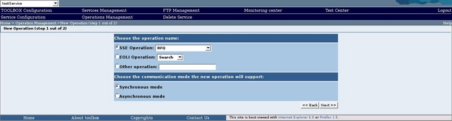

To add a new asynchronous operation follow these steps.
Display the list of the Service operations available.
Click on the "ADD Operation" button the browser should display

In the "Choose the operation name" enter the mane of the operation. The Operation Name is only a mnemonic name which is used by the TOOLBOX to store and display information related to a specific operation. It is not used to deploy the real operation and to create the WSDL file. To publish a SSE or EOLI compliant operation select the operation name using the drop down list. For "generic operation" (operation which are not compliant with the SSE ICD or with the EOLI ICD) deployment select the "Other operation:" radio box and enter the operation name.
In the "Choose the communication mode the new operation will support:" select the Asynchronous mode option of radio box.
Click on "Next >>" the browser will display asynchronous operation page. By clicking on the "<< Back" button you will be redirected to the Operation listing page.